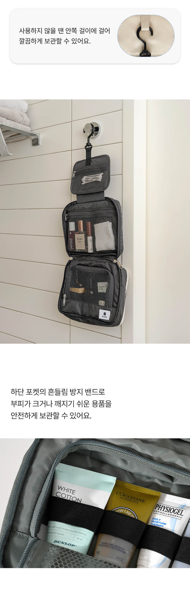

걸어 두고 쓰고, 닫아서 가져가는 흐름
출장·여행·외박 때 챙겨 간 그대로 욕실에 걸어 쓰고, 닫아서 가져올 수 있어 좋았다는 구매 후기가 있습니다. 수납이 넉넉하다는 평가도 함께 남겼습니다.
오늘의집 구매 후기 요지
잦은 지방 출장에서 50회 이상 썼다는 구매자는, 세면도구를 상시 넣어 두면 준비 시간과 공간이 줄어든다고 평가했습니다.
오늘의집 구매 후기 요지, 작성자 진술
각각 한 구매자의 경험이며, 모든 사용자의 결과를 뜻하지 않습니다.